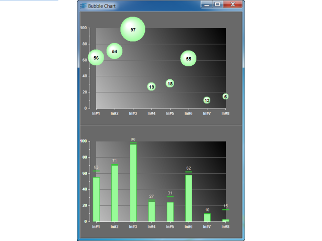

bubbleShows how to use a bubble displayer.
This sample shows you how to display data with a bubble displayer. Three data sets are displayed by the two charts of this sample:
Both logSet and avgSet are updated by a listener positioned on inputSet.
The bottom-most chart is used to display inputSet (bar displayer)
and logSet (step displayer). The steps are annotated with
an instance of the IlvChartDataPointLabel class that displays the values of
logSet.
The top-most chart uses a Bubble Displayer connected to the following data sets:
The visual effect rendered by the displayer is that the longer a bubble stays at a high y value, the bigger its size is. The bubbles are annotated with the values of avgSet.
The following interactions are available:
IlvCartesianChartIlvPointInfoArrayIlvChartDataPointlabelIlvBubbleChartDisplayerIlvBarChartDisplayerIlvFixedStepChartDisplayer